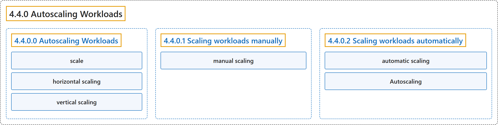

4.4.0 Autoscaling Workloads
Classification

Glossary
| Term | Definition | 中文翻译 | Source |
|---|---|---|---|
| 4.4.0 Autoscaling Workloads 自动扩缩工作负载 |
"With autoscaling, you can automatically update your workloads in one way or another." | 借助自动扩缩，你可以通过某种方式自动更新工作负载。 | The Kubernetes Authors, n.d., "Autoscaling Workloads", para. 1 |
| 4.4.0.0 Autoscaling Workloads 自动扩缩工作负载 |
(No definition) | （无定义） | The Kubernetes Authors, n.d., "Autoscaling Workloads" |
| scale 扩缩 |
"In Kubernetes, you can scale a workload depending on the current demand of resources." | 在 Kubernetes 中，你可以扩缩工作负载，依据是当前的资源需求。 | The Kubernetes Authors, n.d., "Autoscaling Workloads", para. 2 |
| horizontal scaling 水平扩缩 |
(context) "The first approach is referred to as horizontal scaling, while the second is referred to as vertical scaling." | （语境）第一种方式称为水平扩缩，第二种称为垂直扩缩。 | The Kubernetes Authors, n.d., "Autoscaling Workloads", para. 4 |
| vertical scaling 垂直扩缩 |
(context) "The first approach is referred to as horizontal scaling, while the second is referred to as vertical scaling." | （语境）第一种方式称为水平扩缩，而第二种称为垂直扩缩。 | The Kubernetes Authors, n.d., "Autoscaling Workloads", para. 4 |
| 4.4.0.1 Scaling workloads manually 手动扩缩工作负载 |
(No definition) | （无定义） | The Kubernetes Authors, n.d., "Scaling workloads manually" |
| manual scaling 手动扩缩 |
"Kubernetes supports manual scaling of workloads." | Kubernetes 支持工作负载的手动扩缩。 | The Kubernetes Authors, n.d., "Scaling workloads manually", para. 1 |
| 4.4.0.2 Scaling workloads automatically 自动扩缩工作负载 |
(No definition) | （无定义） | The Kubernetes Authors, n.d., "Scaling workloads automatically" |
| automatic scaling 自动扩缩 |
"Kubernetes also supports automatic scaling of workloads, which is the focus of this page." | Kubernetes 还支持工作负载的自动扩缩，这是本页的重点。 | The Kubernetes Authors, n.d., "Scaling workloads automatically", para. 1 |
| Autoscaling 自动扩缩 |
"The concept of Autoscaling in Kubernetes refers to the ability to automatically update an object that manages a set of Pods" | Kubernetes 中的自动扩缩概念指的是自动更新一个对象的能力，这个对象管理着一组 Pod | The Kubernetes Authors, n.d., "Scaling workloads automatically", para. 2 |
References
The Kubernetes Authors. (n.d.). Autoscaling Workloads. Kubernetes Documentation. Retrieved October 31, 2026, from https://kubernetes.io/docs/concepts/workloads/autoscaling/